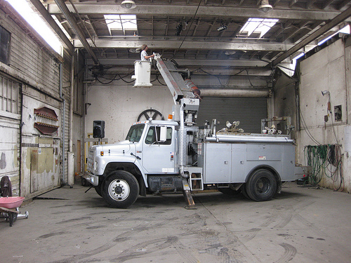

2009 Week 18 in Review
April 26 to May 2, 2009
M4 Factory Party
Every year, OTM Inc drops everything to help with the annual M4 party. This year, it was held in the loading dock of the Big Building in South Seattle.
I spent most of the week preparing for the party. I even borrowed a bucket truck to hang lights, projectors, and rig the aerialist rope:

The party itself went great: we had a big crowd and it was a lot of fun. We took tons of pictures that are slowly getting uploaded to the party's Flickr pool here. Here's a quick preview:
All the performers were great, from the graffiti artists to the burlesque dancers, and OTM Inc wants to thank everyone for being a part of it.
No Smoking
OTM Inc has heard a rumor that the EPA will start to fine noncompliant diesel exhaust-emitting boat operators. To verify, we made some calls.
The EPA said existing diesels are not required to comply with the new requirements - except in some cases, such as when the engines are large, polluting way more than others, and have a certified technology that will significantly reduce emissions available for the type of engines.
This means the there are only a few engines that are effected, but the most notable is the Washington State Ferry System. They're still running some EMD two cycle engines that can be modified to run cleaner. If they can be modified, then the requirement may be in effect.
Most of the changes to the rules are for new engines, so this is a battle for the manufactures.
Voluntary compliance is a nice thing though. There are a few things to consider for owners trying to reduce their emissions.
First, how does the EPA test exhaust? Apparently, there are lots of ways to figure out the exact chemical breakdown of an engine's exhaust, but the most important test to pass in the one that measures Particulate Material Density by opacity. This is a scientific visual test, where the engine runs at full rated speed to produce 100% rated horsepower. Then, without much relative wind, the inspector (engineer) looks at the exhaust and determines the percentage of light that passes through the plume. Black as night is 100%, dark haze is 50%, and a vapor trail is 0%. Most trucks on the road are allowed a score of 40%.
Second, smoke can signal that something is wrong with your engine. The concerned owner and engineer should take immediate action if they see smoke, as it is more than just a signal. Smoke will carbon up the valves, causing more leaking, and then more smoke, and so on until the power is reduced to nothing and the engine stops. This is why one of the ten diesel commandments for engineers is "Never let thy engine smoke, else thou shalt suffer thine owner's wrath."
Third, the best way to prevent smoke is to physically clean your engine inside and out, replace the piston rings regularly, and service the injectors regularly. A diesel is a diesel, and the only thing that can be done to clean up its emissions in any circumstance is to add more clean air, squish the air better, and mist in the fuel better. Servicing rings valves and injectors regularly will get any engine closer to the sought-after vapor trail.
The EPA requires some engines to do more: specifically implement something that the Diesel Emissions Reduction Act calls "Certified technology," which is available at a relatively low cost through government programs. Certified Technology (CT) is some product that the EPA has tested and can prove creates a significant reduction in emissions. CT is hard to create and no company is going to attempt it unless it is profitable. It helps that the technology is required and a large number of the engines are in use, but if designing the technology will not be profitable, then there are grants available to help an "emerging technology" becomes a "certified technology".
OTM Inc is currently preparing its own application for a grant to pay for the R & D to design a Certified Technology kit for the remaining Washingtons. This kit will include step-by-step instructions on how to service the rings, valves and injectors. We hope that this emerging technology (about to begin clinical trials this June on the Arthur Foss) will be quickly recognized by the EPA as a certified technology.